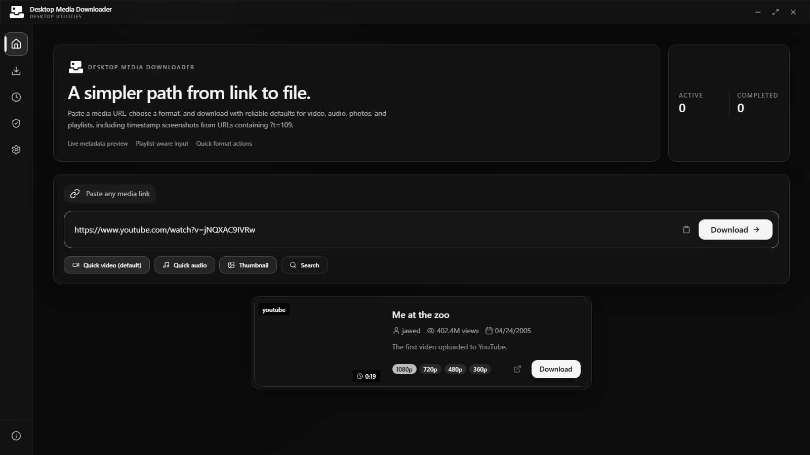
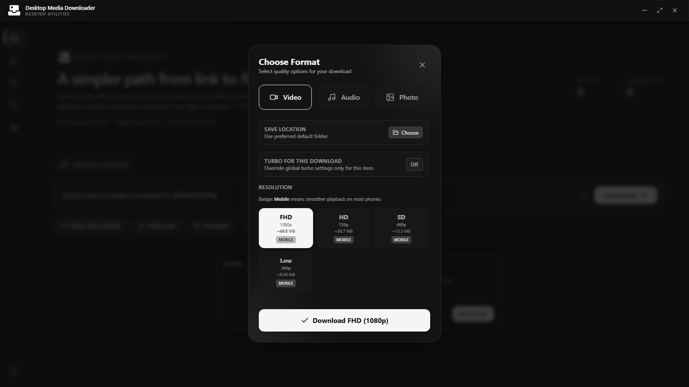
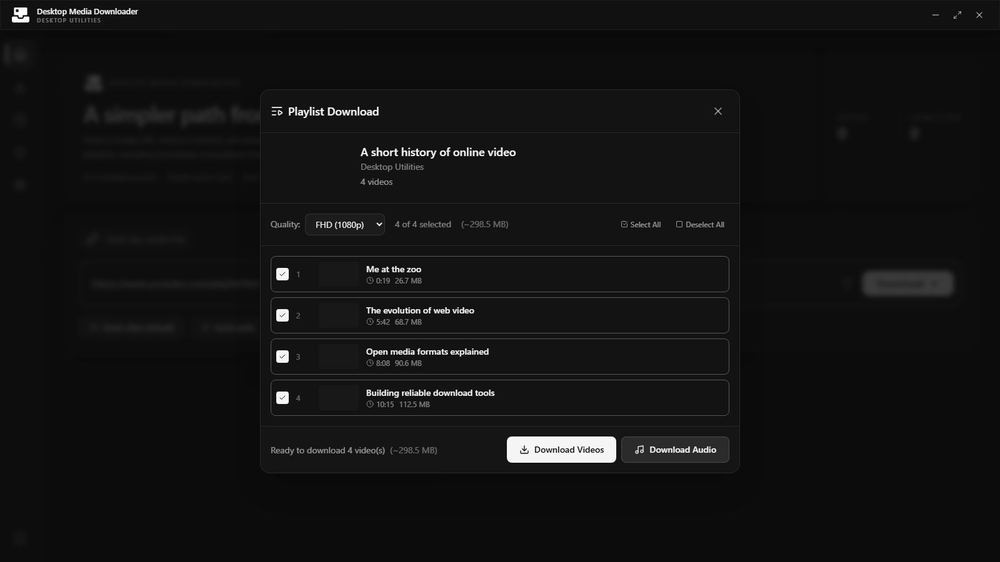
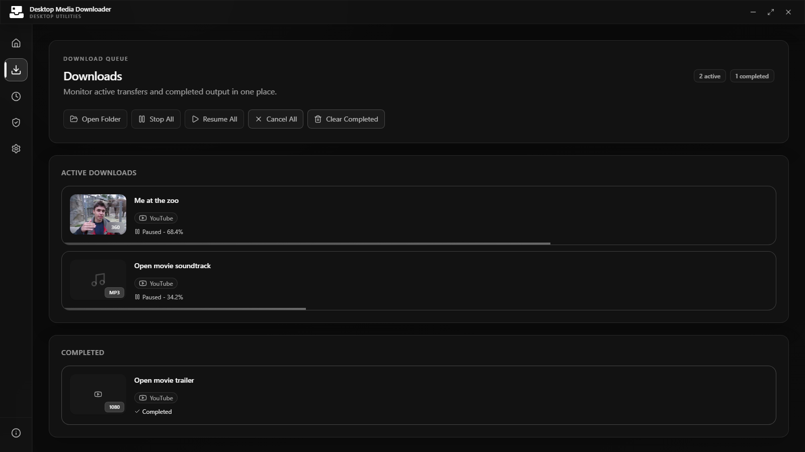

Self-contained core
Electron, a supported Node.js runtime, and a checksum-verified yt-dlp build are included.
Open source / Windows / macOS / Linux
Download video, audio, playlists, thumbnails, and timestamp screenshots from YouTube and other yt-dlp-supported sites when you are authorized to save them.

Downloads
Official builds are loaded directly from the latest GitHub release.
Electron, a supported Node.js runtime, and a checksum-verified yt-dlp build are included.
Install it for high-quality stream merging, MP3 conversion, metadata, and screenshots.
Commercial code signing is not currently included, so your operating system may show a warning.
Capabilities
Analyze links, choose formats, and manage the queue without working in a terminal.
See an immediate preview while full metadata and available formats load in the background.
Choose video, audio, thumbnails, or timestamp screenshots with clear output options.
Inspect a playlist and select the exact items you want before the queue starts.
Pause, resume, cancel, or retry downloads and keep completed work organized.
History and preferences stay on your device and can be removed whenever you choose.
The required downloader and JavaScript runtime are bundled and verified. No separate Python or system yt-dlp installation is required.
Interface
Actual application captures in its monochrome dark theme.



Workflow
Run the installer and confirm the first-run system check.
Add a supported media URL and review the preview.
Choose output type, quality, and destination.
Start the job and manage it from the persistent queue.
System & trust
Desktop Media Downloader is open source, requires no app account, and keeps its history and preferences in local application storage.
Only download media you are authorized to save. The app is not intended to bypass DRM, paywalls, or access controls.
Read the legal noticeBrowser-cookie access is disabled by default and is used only when you explicitly choose a browser for authenticated media.
Review the sourceVersion 1.0.0